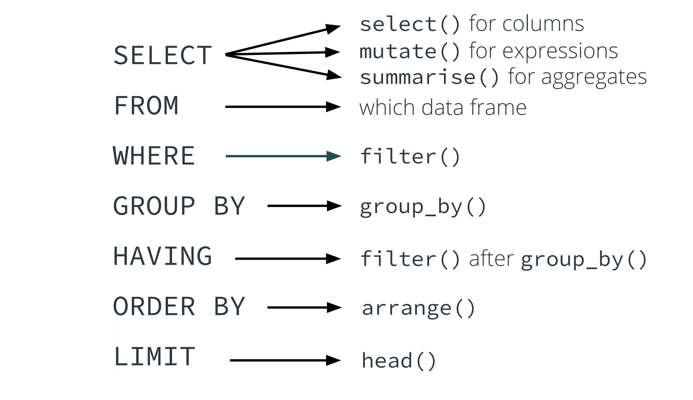
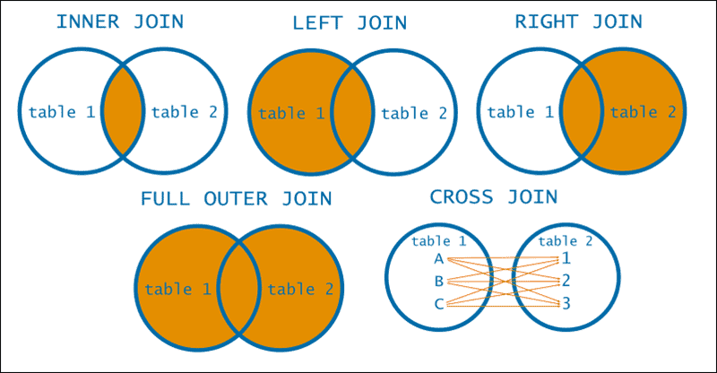
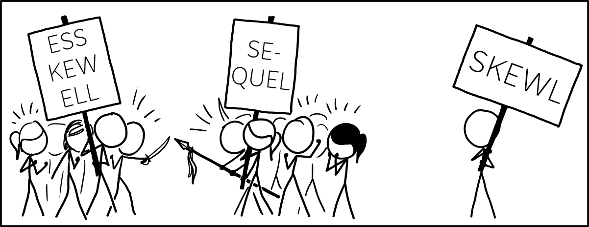

| year | month | day | dep_time | sched_dep_time | dep_delay | arr_time | sched_arr_time | arr_delay | carrier | flight | tailnum | origin | dest | air_time | distance | hour | minute | time_hour |
|---|---|---|---|---|---|---|---|---|---|---|---|---|---|---|---|---|---|---|
| 2013 | 1 | 1 | 517 | 515 | 2 | 830 | 819 | 11 | UA | 1545 | N14228 | EWR | IAH | 227 | 1400 | 5 | 15 | 2013-01-01 05:00:00 |
| 2013 | 1 | 1 | 533 | 529 | 4 | 850 | 830 | 20 | UA | 1714 | N24211 | LGA | IAH | 227 | 1416 | 5 | 29 | 2013-01-01 05:00:00 |
| 2013 | 1 | 1 | 542 | 540 | 2 | 923 | 850 | 33 | AA | 1141 | N619AA | JFK | MIA | 160 | 1089 | 5 | 40 | 2013-01-01 05:00:00 |
Advanced topics: SQL
CMSACamp 2026
Department of Statistics & Data Science
Carnegie Mellon University
Background
Recall: data science workflow

- So far, we have primarily focused on tidy, understand, and communicate steps, taking the import step for granted
- In industry, most data live in SQL databases and are too big to live in our laptops
Therefore: being able to (efficiently) extract data from SQL databases is vital for success
Why aren’t R/Python alone sufficient for this purpose?
- SQL databases allow you to persistently store and organize data
- Can handle large volumes of data and easily scalable
- Support a streamlined Extract-Transform-Load (ETL) process for streaming data
- Provide access management restrictions to specific data, e.g., health records
- Allow for explicit linkages across tables (primary and foreign keys)
- Enable indexes to be defined on tables for efficiency, e.g., date/time fields
Typical workflow: use R for accessing subsets of data from a SQL database for modeling
What is a database?
A database is an organized collection of data that is managed by a database management system (DBMS)
A DBMS is the software with which users interact to obtain or analyze data stored in a database
Contrast to a file-based system that manage and organize data as individual files on storage
Advantages of DBMSs include:
Control of data redundancy
Ensure data consistency across users
Improved security and control over data-sharing
Improved data integrity
Economy of scale
BUT…DBMSs also can be more complex, costly, and have a higher impact of failure
Intro to SQL (Structured Query Language)
SQL provides a consistent grammar (Structured Language) for asking and answering questions (Queries) about collected data
Allows us to communicate with data stored in a database via a (relational) DBMS

SQL dialects
SQL has multiple dialects, such as:
MySQL
SQLite (what we use today)
DuckDB
PostgreSQL
Google BigQuery
Microsoft Access SQL
- Multiple dialects allow SQL to be tailored to the specific needs and capabilities of different DBMSs
- Different SQL dialects are quite similar to each other
- So, while we use SQLite today, you will be able to quickly pickup whichever dialect your institution/employer uses
SQL tables are nouns, on which you ask targeted queries
- SQL tables are just 2D representations of data
- A collection of columns (variables) and observations
These are similar to data frames/tibbles in
R- You’ve already worked with them in
R- yay!
- You’ve already worked with them in
SQL grammar has built-in keywords (verbs)
SQL keywords are verbs which allow you to systematically query tables
Example: starting with flights data from nycflights13 package
Each row represents a flight departed from NYC in 2013
336,000+ observations and 19 columns (variables)
| dest | month | mnd | mxd | avd |
|---|---|---|---|---|
| ABQ | 12 | -38 | 149 | 30.3225806 |
| ABQ | 11 | -61 | 34 | -8.0333333 |
| ABQ | 10 | -35 | 138 | 0.2903226 |
| ABQ | 9 | -43 | 109 | -0.3666667 |
| ABQ | 8 | -55 | 98 | -3.5483871 |
| ABQ | 7 | -45 | 153 | 17.0967742 |
SQL keywords map onto dplyr verbs

Today: nycflights13 database

Contains flight info for NYC departures to various US destinations in 2013
flights: all NYC departures in 2013weather: hourly data for each airportplanes: construction info for each planeairports: airport names and locationsairlines: two letter carrier codes/names
Establishing a SQL connection within R
We use SQLite: “small, fast, self-contained, high-reliability, full-featured, SQL database engine”
#install.packages(c("DBI", "dittodb", "RSQLite", "nycflights13")) need to install all these
library(DBI)
library(dittodb)
library(RSQLite)
# establishing connection via sqlite
# ":memory:" is a special path that creates an in-memory database
# other database drivers require more details (like user, password, host, port, etc.)
con_air <- DBI::dbConnect(RSQLite::SQLite(), ":memory:")
# creates a database including a few tables from the nycflights13 dataset with con_air connection
dittodb::nycflights13_create_sql(con_air)SQL tables as a tibble
A tbl is different than a tibble
tblis a pointer to a remote objecttibbleis a dataframe in your local environment
We can use dplyr syntax on tbl objects
SQL tables as a tibble
collect() copies a SQL table from its remote server location to the local memory location in R
# A tibble: 3 × 19
year month day dep_time sched_dep_time dep_delay arr_time sched_arr_time
<int> <int> <int> <int> <int> <dbl> <int> <int>
1 2013 1 1 517 515 2 830 819
2 2013 1 1 533 529 4 850 830
3 2013 1 1 542 540 2 923 850
# ℹ 11 more variables: arr_delay <dbl>, carrier <chr>, flight <int>,
# tailnum <chr>, origin <chr>, dest <chr>, air_time <dbl>, distance <dbl>,
# hour <dbl>, minute <dbl>, time_hour <dbl>Different ways to query in Quarto
- Using the
dbplyrR package (loaded withtidyverse) will directly translatedplyrcode into SQL
- Using the
DBIR package, we can send SQL queries through anrchunk
- Using a
sqlchunk, we can write actual SQL code inside a Quarto document
We will primarily use the third option today
SQL queries ordering
Queries in SQL start with SELECT keyword and consist of several keywords which must be written in the following order:
SELECTFROMJOINWHEREGROUP BYHAVINGORDER BYLIMIT
A semicolon (;) is typically used to indicate the termination of a SQL statement
SELECT to subset columns from a table
Syntax: SELECT <column_name> FROM <table_name>
Notes:
It’s best practice to always use
LIMITwhen just selecting columns from a tableThe asterisk (*) means return all (any) columns
SQL will return any 10 rows, so the original flights order may not be preserved
SELECT to subset columns from a table
Let’s look at 10 rows and only the dep_time, arr_time, and flight variables from the flights table:
Notes:
The original flights ordering is preserved in
dplyrSQL operates on sets of observations, which are an unordered collection
We’ll later control ordering explicitly in SQL using
ORDER BY
SELECT to create new variables
Suppose we want to measure of average speed (in miles per hour) for each flight:
AS speed says that we want to name our new column speed, instead of distance/(air_time/60)
In dplyr, we have the mutate() verb
Takeaway: SELECT in SQL serves to pick existing columns or to create new ones
We can also aggregate on columns via SELECT
SQL has built in aggregate functions: MIN, MAX, COUNT, SUM, AVG, … (some depend on specific SQL dialect, like MEDIAN)
Let’s get the minimum and maximum air time for the flights in our SQL table (luckily air_time is in minutes not hours…)
Filtering observations WHERE a criteria is met
Suppose we want to filter to only observations that originated from JFK airport and limit our results to ten rows (keeping all columns):
Like in base R, we can use ! to negate the equal sign statement
SQL supports other logical operators, such as: <, <=, >, >=
WHERE to find value IN or NOT IN a range?
Find 20 records which have a tail number matching either “N593JB” or “N532UA”:
Missing values in SQL
NULL refers to missing values in SQL
We have a substantial number of observations that are missing wind_gust variable:
We can remove the missing values using wind_gust is NOT NULL
Note: wind_gust != NULL does not work as NULL values don’t match this way in SQL
This is different from base R and dplyr
GROUP BY variables and do aggregate calculations
Let’s get the minimum, maximum, and average arrival delay by month, day, and destination:
Filtering aggregated values with HAVING
Given number of plane engines, how many had less than 200 manufacturers?
ORDER BY columns when displaying output
Get minimum, maximum, and average arrival delay by month day and destination:
Like dplyr, the ordering in SQL is ascending by default, unless you specify descending with DESC
Try it yourself: which destination had the longest average delays?
Spot the syntax mistakes
Other handy SQL functions
DISTINCT can be used to obtain only the unique values (or combinations) from a table.
Getting the first ten records of unique carrier and flight number combinations, ordered by carrier and then flight number:
We also can use CASE WHEN in SQL (analogous to case_when() in dplyr)
Subqueries in SQL
Subqueries are queries that are nested inside another SQL query
Help us get more automation over filtering
Suppose we want to count total flights with destination codes starting with “M”, grouped by code
- We could first get all destination codes starting with “M” (
LIKE "M%"does wildcard matching)
- Then, we could manually type out this list in are query but this is tedious are prone to error
Additional worry: what if a new destination code is added that starts with “M”?
Subqueries in SQL
Takeaway: subqueries result in more automated, scalable, and expressive code
Relating information between tables in SQL
How to get the count of total flights in Jun/Jul by plane carrier name?
Almost there…but we want the carrier name, not carrier code
How can we modify our query to obtain and use this carrier name information?
We can use joins!
Joining in SQL
Recall that SQL is a query language that works on relational databases
The syntax for tying together information from multiple tables is done with a
JOINclause
A JOIN clause requires four pieces of information:
The name of the first table you want to
JOINThe type of
JOINbeing usedThe name of the second table you want to
JOINThe condition(s) under which the records in the first table should match records in the second table

Interlude: keys in SQL
Keys are useful for the following:
Creating relationships between two tables
Keeping data consistent and valid in the database
Helping in fast retrieval of data
Maintaining uniqueness in a table
Primary key: constraint that uniquely identifies each record in a table (e.g.,
studentID)Must be unique and not null
Only one allowed per table
Foreign key: constraint that establishes a link between two tables
- Refers to the primary key in another table
These are extremely useful for joining/relating two tables in a SQL database!
Joining in SQL
airlines: carrier code is aPRIMARY KEYsince it uniquely identifies each observationflightscarrier code is aFOREIGN KEYthat corresponds to the carrier codePRIMARY KEYinairlines— it is not a unique identifier of observations inflights
We can use the idea of a LEFT JOIN to link the keys:
Note: we use table aliases (e.g., “al” for “airlines”) to avoid reference ambiguities
This gives us the airline names based on the carrier code column!
Saving SQL query outputs as R objects
We can use --|output.var: "name_of_variable" inside the {sql} chunk to save query output to the R environment
Destructive actions in SQL
In SQL, you can run commands that alter database schemas or permanently erase and modify data without automatically generating backups.
These are called destructive actions. Examples include:
DROP: deletes entire database objects (like tables, views, indexes, or the entire database) along with their data and structural definitionsTRUNCATE: instantly removes all rows from a table, resetting the table to its initial empty stateDELETE: removes rows from a tableUPDATE: modifies existing data in the database
Running DELETE (or UPDATE) without a WHERE clause will delete (or overwrite) every single row in the table
SQL best practices
Before running any destructive action, you should:
Verify the statement with
SELECTUse a SQL transaction block for testing
Protecting your username and password
In practice, we will often have to put in credentials to connect to a SQL database
So, how do we do this without leaking our username/password?
- Edit the
.Renvironfile
Appendix
SQL command typology
You may hear SQL commands split into subsets by their purpose:
Data Definition Language (DDL): commands to create and define the structure of a database
CREATE,ALTER,DROP
Data Manipulation Language (DML): commands to handle data within tables
INSERT,UPDATE,DELETE
Data Query Language (DQL): commands to retrieve or query data from tables
SELECT,WHERE,LIMIT

Resources
List of resources consulted for building these slides:
